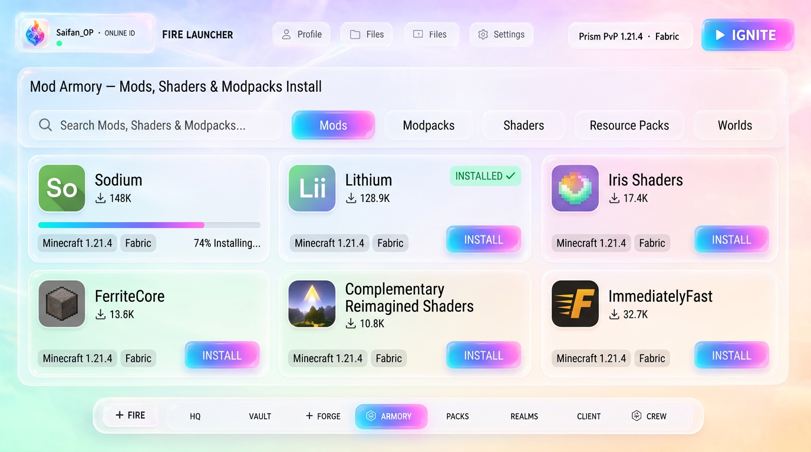
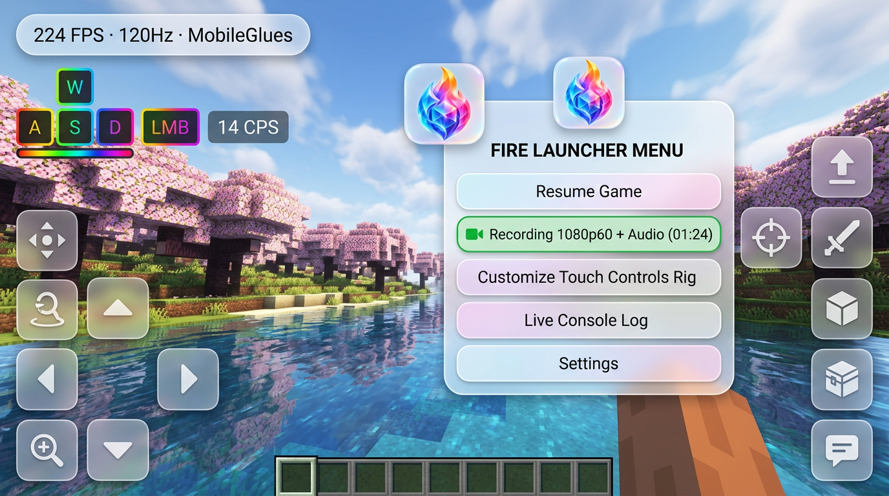
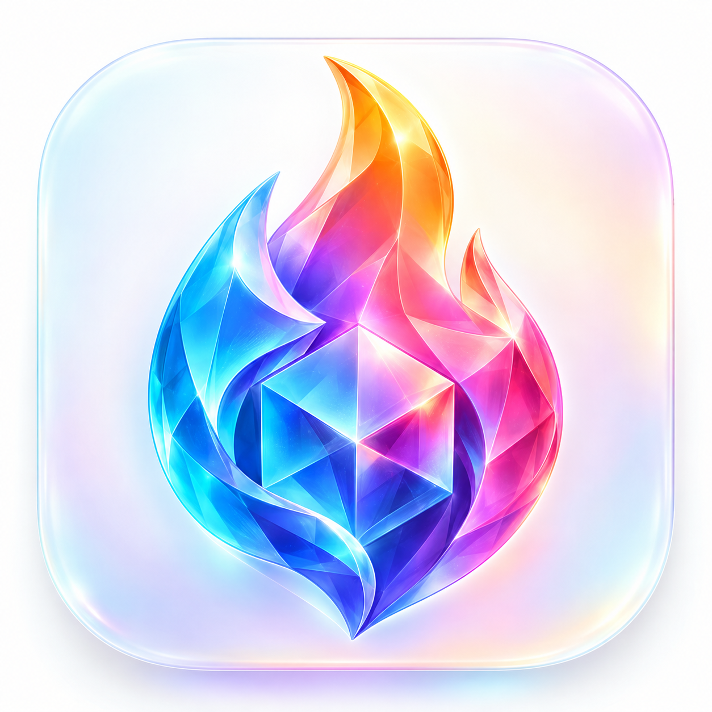

1. HQ Home Dashboard (3-Wing Bento Deck)
Top Command Header (Operator ID, Config/Ops/Files/Console, Active Instance + IGNITE), Left 3D Skin Studio, Center 2×2 Pastel Bento Cards, Right Active Instance & Rack, and Bottom Floating Dock.
Full HD showcase of all 7 Prism Light Multi-Color screens + interactive UI simulator underneath.
Every screen of FIRE LAUNCHER — HQ Home, Version & Loader Installer, Mod Armory, Settings & FPS Boost, Instance Vault, Accounts & Fire Client, and In-Game Controls Overlay.
Top Command Header (Operator ID, Config/Ops/Files/Console, Active Instance + IGNITE), Left 3D Skin Studio, Center 2×2 Pastel Bento Cards, Right Active Instance & Rack, and Bottom Floating Dock.

Relocated Top Prism Downloading Bar (68% · 24.8 MB/s · ETA 00:08), Mod Loader selector (Vanilla, Fabric, Quilt, Forge, NeoForge, OptiFine), Minecraft 1.21.4–1.8.9 list, and Java 21 Auto setup.

Built-in Modrinth & CurseForge Armory with 1-tap install and live Cyan-Indigo-Pink progress bars for Sodium, Lithium, Iris Shaders, FerriteCore, Complementary Shaders, and ImmediatelyFast.

Inverted Right-side Category Rail + 1-Tap FIRE FPS Boost Presets (4GB · 1728 MB, 6GB · 2816 MB, 8GB+ · 4096 MB), RAM Slider, MobileGlues Vulkan + Turnip .ZIP Driver, and 120Hz Unlock.

Left Active Instance Inspector (Prism PvP 1.21.4 · Fabric · OpenJDK 21 · MobileGlues) with IGNITE / Edit / Mods / Folder / Crash Logs + Right Multi-Instance Cartridge Grid.

3D Character & Rainbow Cape Studio, Account Vault (Microsoft Xbox Live, Ely.by, Offline Username), and Fire Client PvP Toggles (120Hz FPS Pill, RGB Keystrokes + CPS, ToggleSprint, Zoom, 1080p60 Audio Recorder).

Live 224 FPS · 120Hz pill, RGB Keystrokes + CPS, translucent frosted touch buttons, and the floating 3D Prismatic Flame button open to FIRE LAUNCHER MENU + 1080p60 Internal Audio Recording.

Signature crystalline prism flame cradling an isometric Minecraft cube — installed across Android Adaptive Icons, Splash Screen, Top Header, Bottom Dock, and In-Game Menu.
Every button, dock, downloading bar, and studio panel has been redesigned from scratch. Click any tab below to inspect all 8 live launcher screens right inside this white-glass simulator.